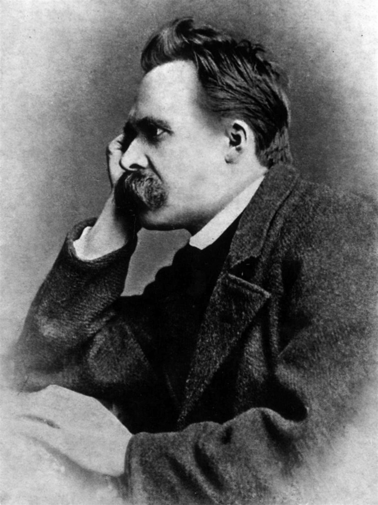

Tema 16 · Nietzsche
Para entrar en Nietzsche
Con Marx conocimos al primero de los filósofos de la sospecha (§55); Friedrich Nietzsche es el segundo, y el más difícil de domesticar. No construye un sistema, sino que escribe en aforismos, a golpes, lo que él mismo llamó «filosofar a martillazos»: golpear los ídolos para oír, por el sonido, cuáles están huecos. Su martillo no respeta nada de lo que Occidente tenía por firme —la moral, la religión, la metafísica y, al final, la verdad misma—, y por eso es a la vez el más demoledor y el más malinterpretado de los pensadores modernos.
Seguiremos su crítica en las tres direcciones en que la lanzó. Primero, contra la moral: una genealogía que rastrea los valores hasta su origen y desemboca en la muerte de Dios (§59). Después, contra el conocimiento: la verdad no copia ninguna realidad en sí, porque todo conocer es interpretar desde una perspectiva (§60). Y, tras el derribo, una respuesta afirmativa sobre la vida: superado el nihilismo, la voluntad de poder, el superhombre y el eterno retorno (§61).
Pocos pensadores han pesado tanto sobre el siglo XX y el XXI: el existencialismo, Foucault y buena parte del pensamiento contemporáneo son impensables sin él. Pero ninguno ha sido tan tergiversado, hasta el extremo de que el nazismo —que él habría despreciado— se reclamara suyo. Conviene leerlo con cuidado, porque Nietzsche se esconde tras máscaras y, según confesó, escribía para que se lo malinterpretara. Cerraremos el tema, como hicimos con Marx, separando su obra de lo que otros hicieron con ella.
§59 · Nietzsche: la crítica de la moral
Genealogía en lugar de fundamento. Friedrich Nietzsche (1844-1900) nació en Röcken, en la Prusia luterana, hijo y nieto de pastores. Filólogo clásico brillantísimo —catedrático en Basilea con solo veinticuatro años—, pronto abandonó la erudición por la filosofía y, aquejado de una salud frágil, escribió en pocos años febriles sus obras mayores: Así habló Zaratustra, Más allá del bien y del mal, La genealogía de la moral. En 1889 se desplomó en una calle de Turín y pasó sus últimos once años sumido en la locura. Su gesto filosófico es inconfundible. Ante la moral, no pregunta «¿qué debo hacer?» ni siquiera «¿es verdadera esta moral?», sino algo previo y más peligroso: ¿de dónde viene la moral?, ¿a quién beneficia? Eso es una genealogía: rastrear los valores hasta su origen, a menudo turbio. Con ello Nietzsche es, junto a Marx y Freud, un maestro de la sospecha (§55): bajo lo que llamamos «bueno» late siempre un interés.

Lo apolíneo y lo dionisíaco. Ese gesto no lo estrenó con la moral: lo ensayó sobre el terreno que mejor conocía, el arte griego. El nacimiento de la tragedia (1872), el libro con que el joven catedrático escandalizó a sus colegas, es el momento exacto en que la erudición se convierte en filosofía. ¿Qué vio allí que nadie había querido ver? Que la Grecia serena y luminosa de los manuales es solo la mitad de la historia: bajo el mármol laten dos impulsos enfrentados. Lo apolíneo —por Apolo, dios de la luz y de la medida— es el impulso de la forma: el orden, el límite, la bella apariencia que vuelve el mundo contemplable. Lo dionisíaco —por Dioniso, dios del vino y del desenfreno— es el impulso contrario: la embriaguez, el exceso, la disolución del individuo en el torrente de la vida. No los memorices como dos etiquetas: son dos fuerzas en tensión, y ninguna basta sola —la forma sin embriaguez se congela; la embriaguez sin forma destruye—. La tragedia ática de Esquilo y Sófocles fue, a ojos de Nietzsche, el instante supremo en que ambas se reconciliaron: el coro dionisíaco canta la verdad terrible de la existencia, y la escena apolínea le da una forma que permite contemplarla sin perecer. Los griegos conocían el dolor de existir mejor que nadie, y precisamente por eso levantaron un arte capaz de afirmar la vida entera, con su noche incluida: la afirmación que el tema perseguirá hasta su final (§61). ¿Y quién mató la tragedia? Sócrates: el racionalismo socrático —la fe en que la existencia puede corregirse con conceptos— secó la fuente dionisíaca. En esa acusación está ya, en germen, todo lo que sigue: preguntar qué impulso vital se esconde bajo la fe en la razón es el primer ensayo de la genealogía, que ahora vuelve su mirada hacia la moral.
Moral de señores y moral de esclavos. El análisis arranca de una distinción entre dos sistemas de valores opuestos. La moral de señores es la de las aristocracias guerreras —el héroe homérico, el patricio romano—: el fuerte se afirma a sí mismo y llama «bueno» a lo que él es —noble, poderoso, vital, capaz— y «malo», sin más, a lo que le es ajeno —vil, débil, cobarde—. Es una moral que brota de la plenitud y dice «sí» a la vida. Frente a ella, la moral de esclavos nace de los sometidos, de los muchos que no pueden imponerse. Incapaz de actuar, esta moral reacciona: invierte la tabla del señor y llama «bueno» a lo que el débil tiene por necesidad —la humildad, la mansedumbre, la obediencia, la compasión— y «malvado» —ya no solo «malo»— a lo que el fuerte es.
La rebelión de los esclavos y el resentimiento. Esa inversión es lo que Nietzsche llama la rebelión de los esclavos en la moral, y su gran protagonista histórico es el judeocristianismo. Quienes no podían vengarse con la mano se vengaron con los valores: del resentimiento —un rencor que, no pudiendo descargarse en actos, se vuelve creador y engendra una tabla nueva— nació una moral que condena al señor y consuela al siervo. El cristianismo triunfó entre los esclavos del Imperio romano precisamente porque les ofrecía eso: una moral que declaraba pecadores a sus amos fuertes y crueles, y que prometía en otro mundo la justicia negada en este. Así, la oposición noble «bueno/malo» quedó sustituida por la oposición «bueno/malvado», y se impuso una moral contra la vida, que exalta la debilidad y sospecha de la fuerza, de la alegría y del cuerpo. A esa operación la llamará Nietzsche la transvaloración —también la encontrarás traducida como transmutación: la inversión de todos los valores— que él se propone, a su vez, invertir.
Mala conciencia y culpa. ¿De dónde sale, entonces, esa voz interior que nos juzga? Nietzsche ofrece una genealogía de la conciencia moral. Cuando la vida en sociedad prohíbe descargar hacia fuera los instintos de agresión, estos no desaparecen: se vuelven hacia dentro, y el ser humano empieza a hacerse daño a sí mismo. Esa crueldad interiorizada es la mala conciencia. El sacerdote le da un nombre y un uso: la convierte en culpa, en pecado, en deuda impagable con Dios. Y da un paso más, el más dañino de todos: mediante el ideal ascético, otorga al sufrimiento un sentido. Que el débil sea maltratado ya es bastante malo; pero el sacerdote le enseña además que es responsable de su dolor, que el dolor lo redime y tiene valor1. Así, una moral nacida para sobrellevar la vida termina por envenenarla.
La muerte de Dios. Todo desemboca en un diagnóstico, no en una blasfemia: «Dios ha muerto, y nosotros lo hemos matado»2. No significa que un señor del cielo haya fallecido, sino que el fundamento que sostenía los valores de Occidente —Dios, el mundo suprasensible, el absoluto— ha perdido toda credibilidad. La revolución científica, el darwinismo (§55) y la propia Ilustración lo han disuelto, y con él quedan en el aire los valores que en él se apoyaban. Por eso Nietzsche se proclama el Anticristo: no como adorador del diablo, sino como quien certifica el final del orden cristiano-moral. La pregunta es qué viene después de esa muerte; y esa pregunta tiene un nombre temible, el nihilismo, con el que se abrirá la última sección. Antes, sin embargo, el martillo se vuelve contra una pieza aún más íntima: la verdad.
§60 · Nietzsche: perspectivismo y verdad
La pregunta por la verdad misma. El segundo gran blanco de Nietzsche no es esta o aquella verdad, sino la verdad como tal: ¿qué es la verdad y por qué la veneramos? Toda la tradición —Platón con sus Formas (§09), Descartes con su certeza (§36), Kant con su crítica (§50)— había buscado un fundamento firme para el conocimiento, una verdad que copiara una realidad en sí. Nietzsche niega que haya tal realidad que copiar, ni tal ojo capaz de verla sin deformarla. Donde sus predecesores cavaban cimientos, él retira el suelo. Esta es su vertiente epistemológica, y conviene leerla en paralelo con aquellos autores, porque es la respuesta más radical a la misma pregunta: el origen, el alcance y los límites del conocimiento.
La verdad como «ejército móvil de metáforas». El análisis se ancla en un texto temprano, Sobre verdad y mentira en sentido extramoral (1873). Allí Nietzsche reconstruye la génesis de eso que llamamos «verdad». Un estímulo nervioso se transforma en una imagen; la imagen, en un sonido; el sonido, en una palabra; y la palabra, al borrar las diferencias entre cosas que nunca son iguales, se vuelve concepto. En cada paso hay un salto, una traducción de algo a algo distinto: una metáfora. El lenguaje no copia el mundo, lo esquematiza y lo hace a nuestra medida, lo antropomorfiza. De ahí su célebre definición: «¿qué es entonces la verdad? Un ejército móvil de metáforas»; las verdades son «ilusiones de las que se ha olvidado que lo son», metáforas gastadas como monedas a las que el uso ha borrado el relieve. Llamamos «verdadero» al conjunto de metáforas habituales que hemos olvidado que lo eran.
El perspectivismo. De esa crítica del concepto se sigue la tesis central: «no hay hechos, solo interpretaciones»3. Todo conocer se da desde una perspectiva: situada, interesada, al servicio de la vida de quien conoce. No existe un «ojo divino», una mirada desde ningún lugar, ni una «cosa en sí» accesible —y aquí el choque con el noúmeno de Kant (§50) y con las Formas de Platón (§09) es frontal—. Esto no es una queja: lejos de empobrecer el conocimiento, multiplicar las perspectivas lo enriquece. Pero la objetividad deja de ser el reflejo de un mundo único y pasa a ser la suma, siempre abierta, de muchos puntos de vista.
La voluntad de verdad y las ficciones útiles. Si la verdad es esto, ¿por qué creemos tan firmemente en ella? Porque la vida la necesita: vivir exige ficciones estables. Las grandes «categorías de la razón» —la sustancia, el yo, la causa— no son rasgos de la realidad, sino ficciones útiles que nuestra especie impuso para orientarse y sobrevivir; aquí Nietzsche prolonga la sospecha que Hume (§39) había dirigido contra el yo y la causalidad. Hasta la ciencia descansa sobre una fe que no examina: la voluntad de verdad, la convicción de que la verdad vale más que la ilusión. Y esa convicción —observa Nietzsche— es un resto moral, casi religioso, que él vuelve contra sí mismo: ¿y si, a veces, la ilusión sirviera más a la vida que la verdad?
Alcance y una objeción. Tanta radicalidad invita a la objeción evidente: «¿es verdad que no hay verdades?». Si todo es interpretación, el perspectivismo sería una interpretación más y se refutaría a sí mismo. Nietzsche aceptaría la primera mitad sin verla como una derrota: el perspectivismo no es un nuevo dogma sobre la realidad, sino un método que se incluye a sí mismo, un martillo que también pone a prueba su propio sonido. Lo decisivo, para él, no es ya si una creencia es «verdadera» en el viejo sentido, sino si sirve a la vida o la empobrece. Con ese desplazamiento —del criterio de verdad al criterio de vida— termina la demolición y empieza la parte constructiva.
§61 · Nietzsche: nihilismo, voluntad de poder y superhombre
El nihilismo. Si Dios ha muerto (§59) y no hay verdades en sí (§60), ¿qué sostiene nuestros valores? Nada: y a esa situación la llama Nietzsche nihilismo, «el más inquietante de los huéspedes», que llama a la puerta de Europa. Significa que «los valores supremos se desvalorizan»: caído el fundamento, todo lo que en él se apoyaba se tambalea. Nietzsche distingue dos formas. El nihilismo pasivo es el del agotamiento, el del «¿para qué?», encarnado en el «último hombre» de Zaratustra, que solo aspira a la comodidad y a una felicidad mediocre, y parpadea. El nihilismo activo, en cambio, destruye los valores ya muertos para despejar el terreno donde plantar otros nuevos. El nihilismo es, así, a la vez el gran peligro y el paso necesario: no hay que rodearlo, hay que atravesarlo.
La voluntad de poder. ¿Qué hay, entonces, bajo la vida, una vez retirados los fundamentos? Nietzsche no lee en el fondo de lo vivo una voluntad de sobrevivir —contra Darwin—, ni de placer —contra los utilitaristas (§53)—, ni de reposo, sino una voluntad de poder: un impulso de crecer, de expandirse, de superarse a sí mismo. La realidad no es un conjunto de cosas-sustancias, sino un juego de fuerzas, de voluntades de poder que se interpretan y se dominan unas a otras; el «ser» es, en el fondo, devenir. Esta es su ontología, vital y no metafísica, y el cimiento de su ética: bueno es lo que acrecienta la potencia, la vida ascendente; malo, lo que la debilita.
El superhombre. ¿Quién crea valores cuando Dios ha muerto? El superhombre (Übermensch), la figura que anuncia Zaratustra. No es una raza biológica ni un tirano —en este punto se lo malinterpretará, como veremos—, sino un tipo espiritual: el ser humano que se supera a sí mismo, que inventa sus propios valores y permanece «fiel a la tierra» en lugar de huir a un más allá. Las tres metamorfosis del espíritu dibujan el camino: el camello, que carga sobre sí los valores heredados; el león, que dice «no» y conquista la libertad de los viejos deberes; y el niño, que crea de nuevo, inocente y afirmativo. El superhombre es «el sentido de la tierra»: la respuesta al nihilismo no consiste en llorar el fundamento perdido, sino en convertirse uno mismo en fundamento.
El eterno retorno y el amor fati. La piedra de toque de esa afirmación es el pensamiento del eterno retorno. Nietzsche lo presenta como un experimento (La gaya ciencia, § 341): imagina que un demonio se desliza en tu más honda soledad y te dice:
Esta vida, tal como ahora la vives y la has vivido, tendrás que vivirla una vez más e innumerables veces más; y no habrá en ella nada nuevo, sino que cada dolor y cada placer, cada pensamiento y cada suspiro volverán a ti, todos en la misma sucesión y secuencia.
¿Te aplastaría esa noticia, o la abrazarías como la cosa más divina que has oído? Leído así, en clave existencial, el eterno retorno es una prueba: solo quien ama la vida hasta el punto de querer que vuelva eternamente, con su dolor incluido, la ha afirmado de verdad4. Ese «sí» total es el amor fati, el amor al destino: «mi fórmula para la grandeza en el ser humano —escribe en Ecce Homo— es amor fati: no querer que nada sea distinto, ni hacia atrás ni hacia adelante, ni por toda la eternidad». Así se cierra el arco: la muerte de Dios no tiene por qué terminar en la desesperación, sino que puede convertirse en la condición de la más honda afirmación de este mundo, el único que hay.
Balance crítico. Pocos diagnósticos han calado tan hondo. La genealogía de la moral, la muerte de Dios, el perspectivismo y la sospecha contra la propia «voluntad de verdad» son hoy patrimonio común del pensamiento, y la huella de Nietzsche en el siglo XX es inmensa. Pero su filosofía plantea problemas serios, que conviene retener:
- La autorreferencia del perspectivismo. Si no hay verdades, la tesis se vuelve contra sí misma; Nietzsche responde convirtiéndola en método, pero la tensión permanece y divide a sus lectores hasta hoy.
- El estilo asistemático y las máscaras. El aforismo y la provocación se resisten a una lectura única: la voluntad de poder y el eterno retorno admiten interpretaciones opuestas —vitalista, metafísica, política—, y él mismo «escribía para que se lo malinterpretara». La falta de sistema es a la vez una elección y un riesgo.
- El peligro de la «moral de señores». La exaltación de la fuerza y la jerarquía, y el desprecio de la compasión y la igualdad, pueden leerse —y se han leído— como un ataque a la democracia y a la dignidad universal que defendía Kant (§51). Sea cual sea la interpretación más fiel, la tensión es real.
La más grave de las distorsiones, sin embargo, fue póstuma. Tras su locura, su hermana Elisabeth Förster-Nietzsche —antisemita y nacionalista alemana— administró su legado, compiló sus apuntes inéditos en un libro, La voluntad de poder, que Nietzsche nunca escribió como tal, y cultivó la cercanía con el nazismo, que lo adoptó como precursor. Pero Nietzsche despreció el antisemitismo, el nacionalismo alemán y la moral de «rebaño» que el nazismo encarnaba; rompió incluso con Wagner, a quien admiraba, en parte por ello. Conviene, como con Marx (§57-§58), no confundir la obra con lo que sus herederos hicieron de ella.
Con todo, su fuerza perdura. El existencialismo (§62) hereda su «Dios ha muerto» y la tarea de crear valores sin garantía; Foucault y la herencia posmoderna (§75) harán de la genealogía un método para desenmascarar las tramas de saber y poder; y Ortega recogerá su perspectivismo (§66). Con Nietzsche, y con los demás filósofos de la sospecha (§55), la confianza moderna en una razón transparente y soberana —la de Kant y los utilitaristas (§51, §53)— toca su punto más bajo. Y aquí, en el umbral del siglo XX, se cierra el XIX.
Es el hilo de las tres partes de La genealogía de la moral (1887): la oposición «bueno/malo» frente a «bueno/malvado», el origen de la mala conciencia y la culpa, y el ideal ascético que da sentido al sufrimiento. Para Nietzsche, dar sentido al sufrimiento no lo alivia: lo eterniza.↩︎
La sentencia aparece en boca del «loco» que busca a Dios con una linterna en pleno día (La gaya ciencia, § 125). No es el grito triunfal de un ateo, sino el anuncio de una catástrofe cultural cuyas consecuencias casi nadie ha medido todavía.↩︎
Formulación de un apunte póstumo, coherente con lo que sostiene en obras publicadas, sobre todo en La genealogía de la moral (III, §12): no existe un «conocer en sí» desprovisto de perspectiva; cuantos más ojos distintos sepamos poner sobre una cosa, más completa será nuestra «objetividad», que es siempre una suma de perspectivas, nunca su abolición.↩︎
Nietzsche jugó también con una versión cosmológica del eterno retorno —como hipótesis física sobre un universo finito en un tiempo infinito—, pero es su lado más débil y discutido; lo decisivo es la versión existencial, el eterno retorno como criterio de la afirmación de la vida.↩︎